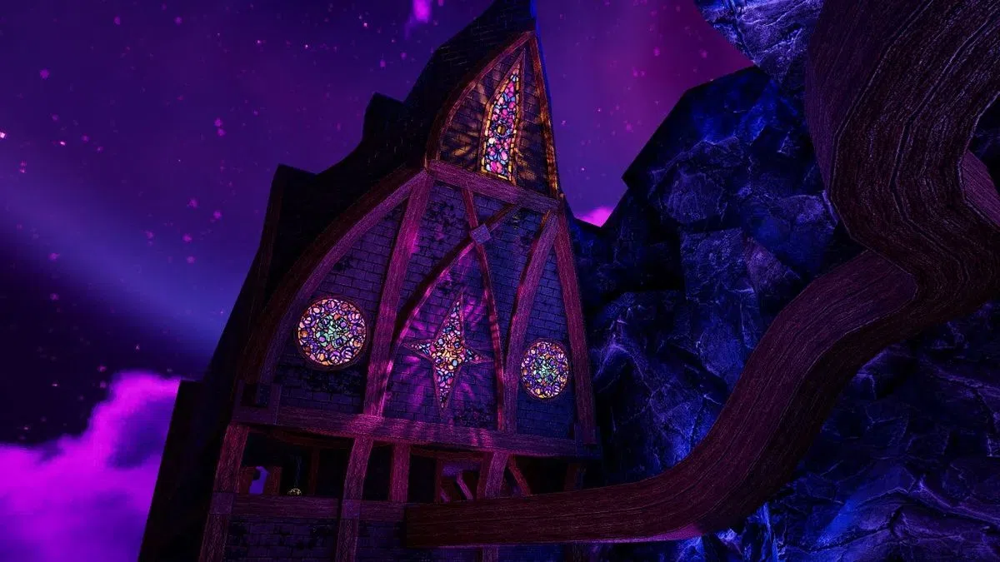

do i truly have potential? have i had it this whole time? why can i not see it... i guess it's what ive been taught. it is sure apparent that certain individuals do not want me to succeed and try there best to 'pull the rug' out from underneath me at every slight chance they get, so much so that my subconscious has accounted for it and has planned/designed against it years ago. for ex: i talk about starting an online business, two predictable outcomes happened. 1. shortly after, a business formed in my city with the same name i gave very specific people, 2. a cousin tried to copy cat me in his own way (i guess an online business = country clothing store for him). not to mention the forced debt... the slandering of my name in court "He simply does not want to work", my then abusive landlord said, as if she had any right over my internal life. shes of the usual 'mental health is a hoax' crowd. so what, every organ in the body can get dieseased and mutate, besides the brain???? anyways. i used a fake business name, and never disclosed my true vision to anyone. that worked out for me. damn, i really gotta get a hold of my trauma! its becoming a pattern in my posts!!!! back to potential, do i have it? no really, i do not know, i have BPD and its hard for me to tell these things....
